Taking “data” and somehow using visual elements so that we can take advantage of our vision to understand data.
Hi, I’m
Alireza Karduni
I teach and research data visualization,
among other things
Global temperature, 1962–2025, °C above the 1951–1980 average. Data: NASA GISTEMP v4
Taking “data” and somehow using visual elements so that we can take advantage of our vision to understand data.
Color
Position
Length
Angle
From triangles to horses and flowers
Visualizations are everywhere
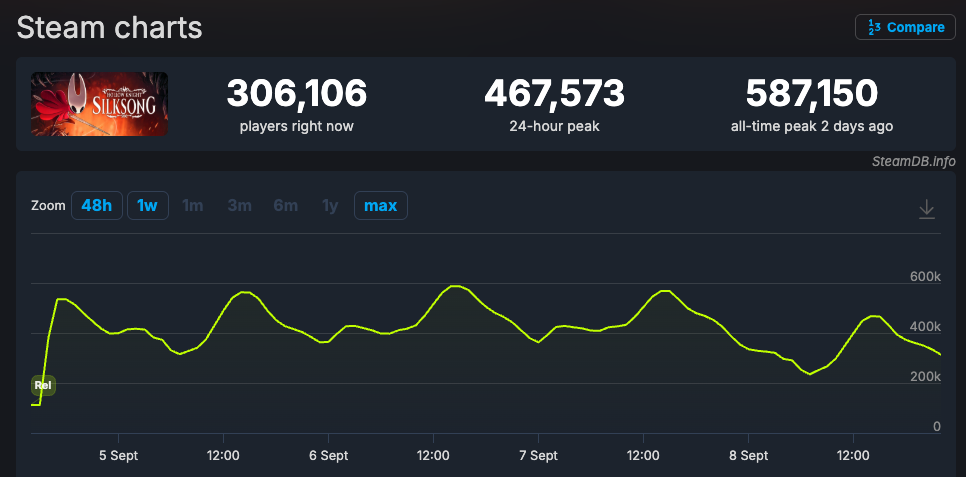
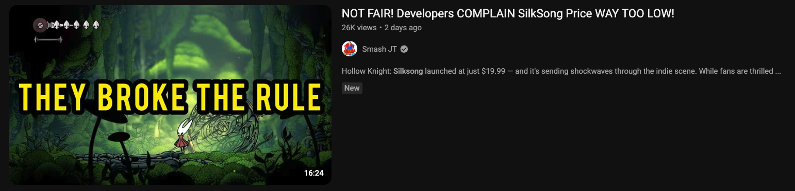
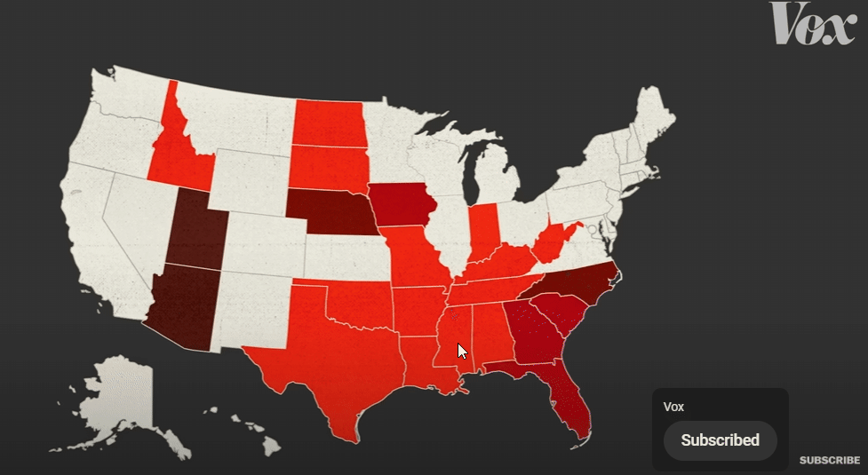
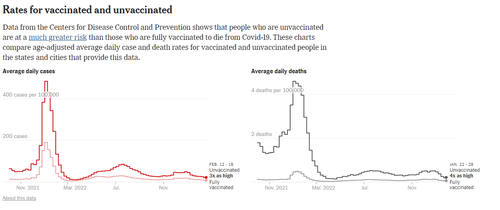
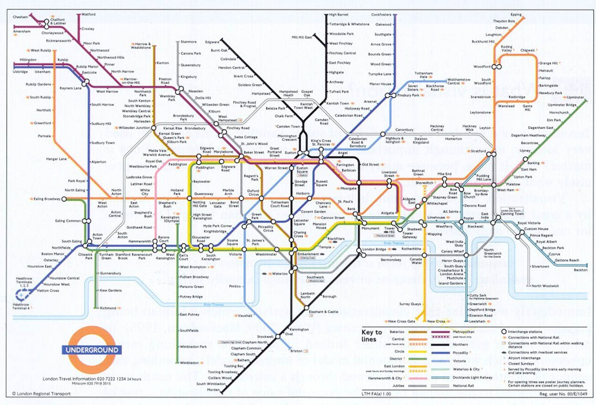
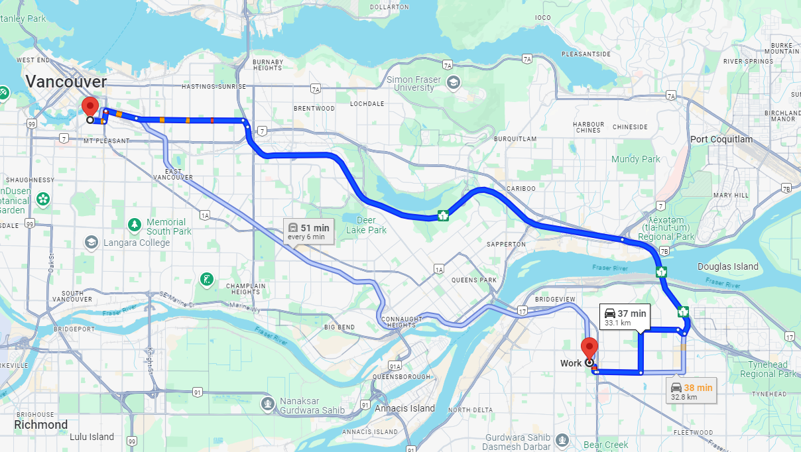
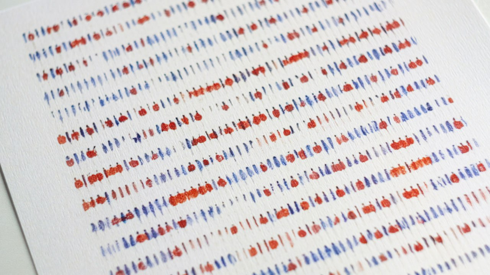
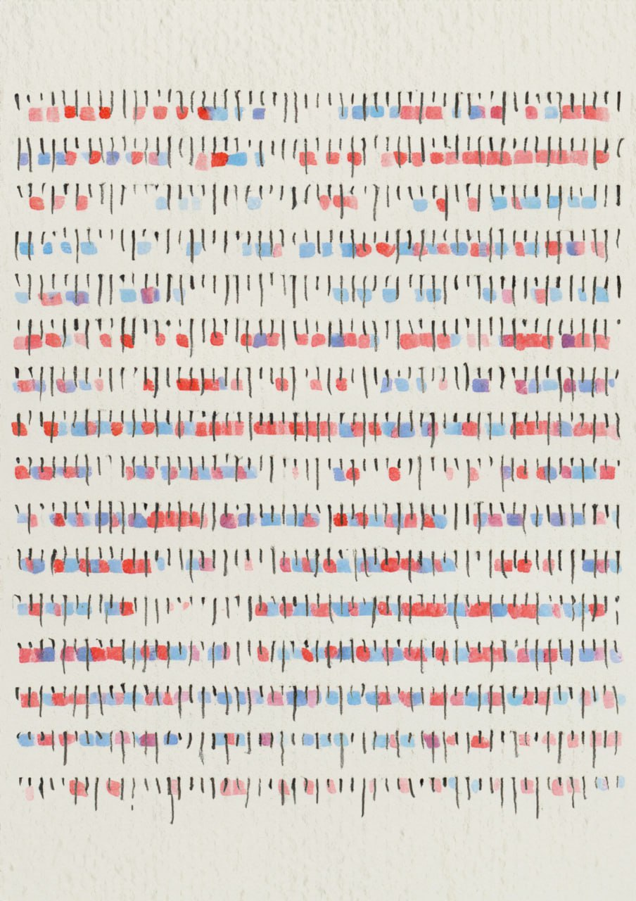
Warming stripes, after Ed Hawkins. Data: NASA GISTEMP v4
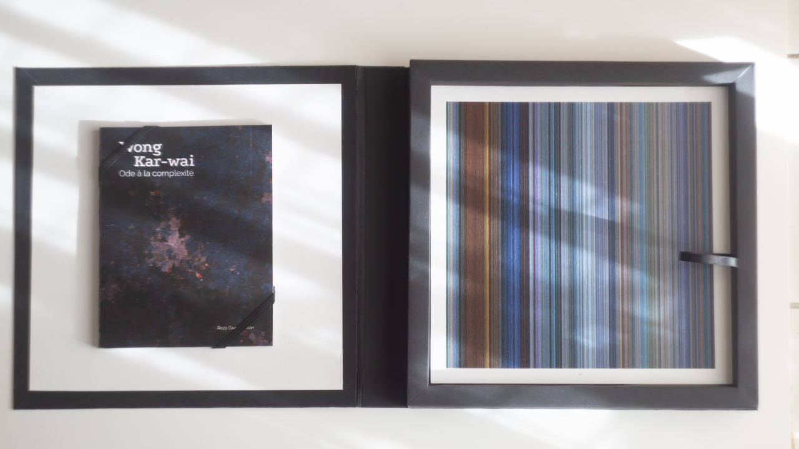
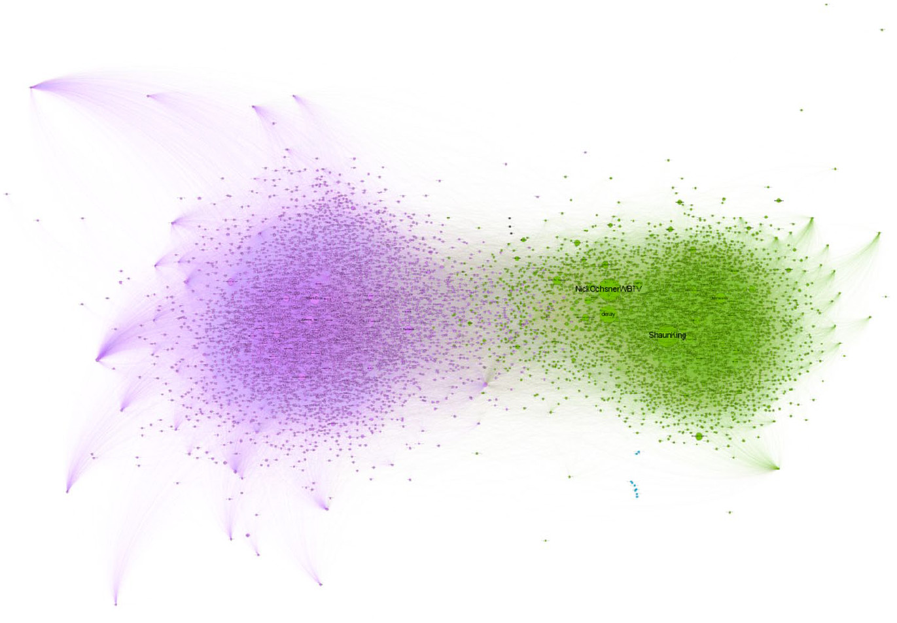
Learning from best practices from psychology and computer science
Take a look at this chart
What can we learn from this chart?
Take a look at this chart
Spend some time and read the description with the chart.
Now this
It requires much less work to read the chart that is designed like this.
Inspired by: nytimes.com, One Report, Diverging Perspectives (2012). Data: US Bureau of Labor Statistics, via FRED
Some visual encodings are noisier
Some illusions distort data
Global statistics are fast
Comparisons are slow
Guide viewers to the right comparisons
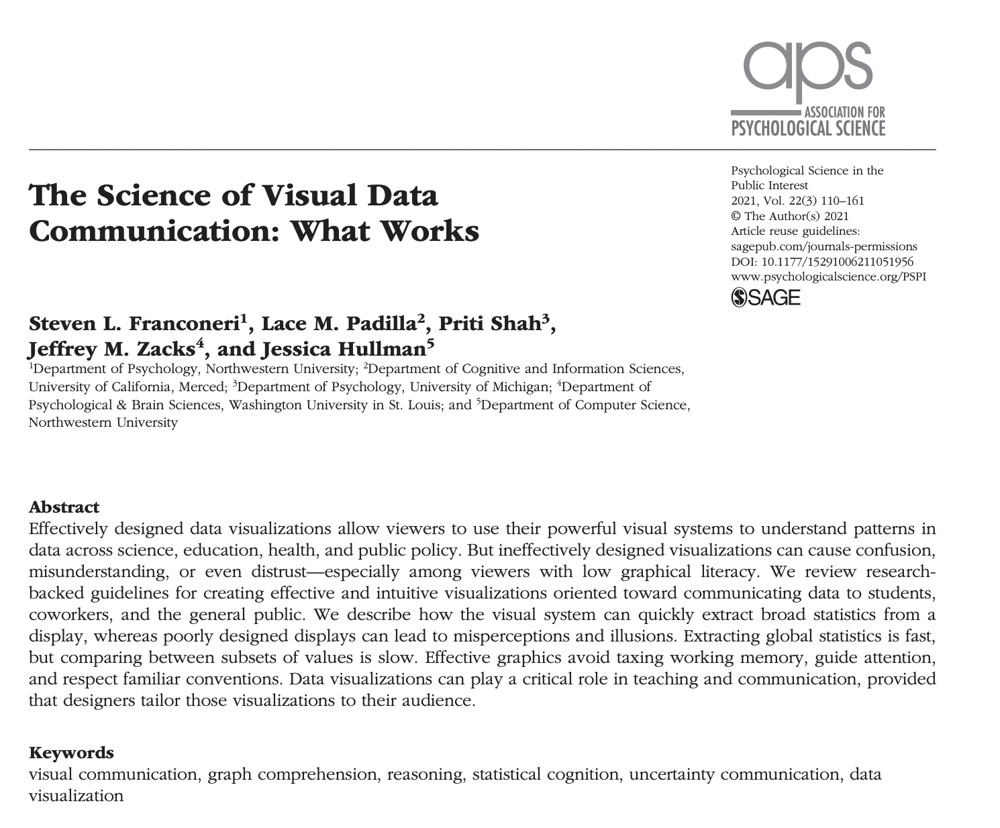
Franconeri, Padilla, Shah, Zacks & Hullman (2021). The Science of Visual Data Communication: What Works.
01Some visual encodings are noisier
Position
Length
People are more precise in reading these.
Angle
Intensity
People are less precise in reading these.
02Some illusions distort data
Use caution with nonzero axes: viewers tend to overestimate differences… even when the nonzero base is marked.
02Some illusions distort data
02Some illusions distort data
Stacked bar: bars on the baseline are position-coded = more precise perception.
These have the same value differences among them as the black bars, but the differences are only visible across the black bars.
02Some illusions distort data
The difference is larger for the lighter segments compared with the darker ones, right?
That is an illusion: the differences are identical.
02Some illusions distort data
Intensity values can look different depending on their backgrounds.
Do not plot intensities on intensities.
02Some illusions distort data
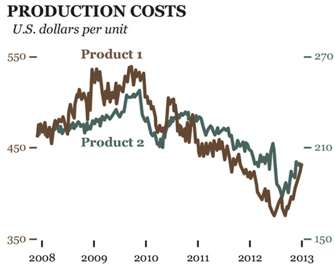
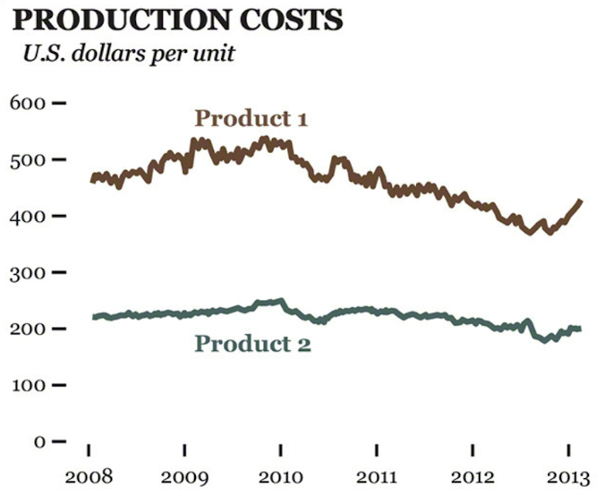
Figures 2.4 and 2.5 from Alberto Cairo, The Truthful Art (2016).
03Global statistics are fast
04Comparisons are slow
05So, guide viewers to the right comparisons
Isolating pairs with “larger second values” is tough…
Tool: shortcut comparisons by adding direct depictions of the deltas, as below.
Some visual encodings are noisier to read
Some illusions distort data
Global statistics are fast
Comparisons are slow
Guide viewers to the right comparisons
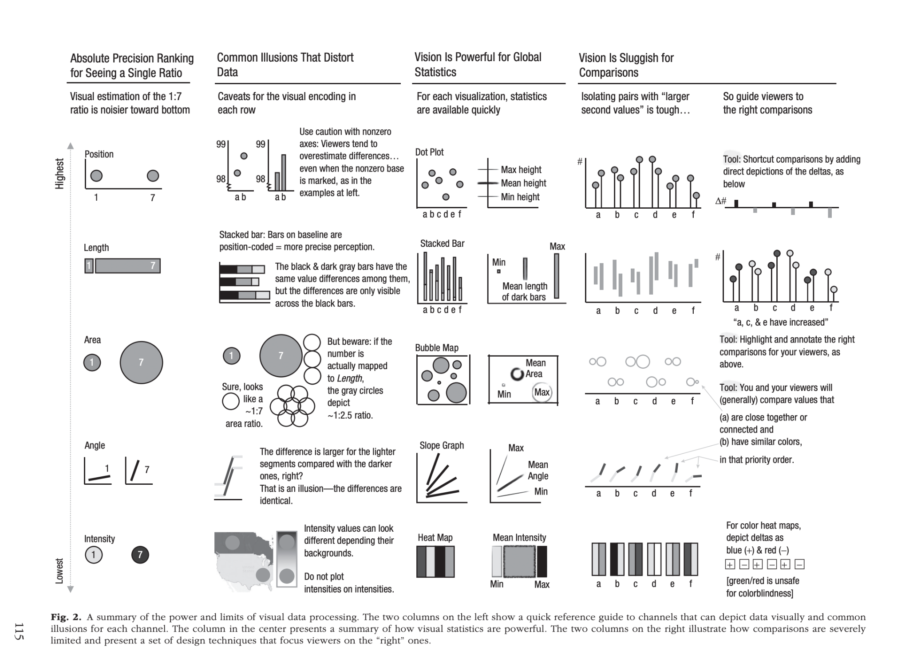
1 · Simplify
2 · Structure
3 · Story
Example 1
Let’s transform this chart
Transform legends
Our eyes have to move back and forth between the legend and the chart to find the appropriate line.
Transform legends
So we can potentially remove the legend from the top.
Directly label lines
Now we can quickly find the different countries in the chart.
Annotate charts to tell a story.
We can use some of the text to directly annotate the chart.
Highlight an element of the chart
If an element in the chart is important, we can guide the reader’s eyes with opacity and highlighting.
Use simpler charts if trends are less important
We can simplify the chart to only focus on important comparisons. This chart makes it easier to compare rates across countries.
Different kinds of comparisons
This chart makes it easier to compare before and after values within each country.
Since 1990, emissions in India and China have grown about five-fold. The UK has cut its emissions roughly in half, while Canada’s are still almost 20% above their 1990 level.
Since 1990, emissions in India and China have grown about five-fold. The UK has cut its emissions roughly in half, while Canada’s are still almost 20% above their 1990 level.
Example 2
A lot of information in here
We can make it easier to read this chart.
Lines are better understood as trends
Focus the eyes on the trend.
Remove redundant information
If the colors are secondary information, we can make them less salient. Because they might confuse users.
Dual axes are confusing
It’s hard to distinguish the two without reading the text. Let’s keep one axis for now.
Move the second chart
Our chart is simplified. But we still need the El Niño context.
Below the main chart
We can move the El Niño chart below.
Annotations are very useful
The two charts share the same x-axis (time), and the same information is kept. We can add annotations to improve the message.
Data: NASA GISTEMP v4 (°C above 1880–1900); NOAA Oceanic Niño Index
Example 3
It’s hard to calculate differences
It seems like the light and dark bars are for two different points in time.
Derive the proper information for the audience
We can visualize the deltas to help with comparing the differences between these values.
The deltas look like this
We can visualize the deltas to help with comparing the differences between these values.
Grouped bar → simple bar
We can visualize the deltas to help with comparing the differences between these values.
Color code groups
We can differentiate between positive and negative rates using color.
Example 4
Let’s transform this chart
Reorganize the data
Figures 5.15 and 5.16 from Alberto Cairo, The Truthful Art (2016). Values read from the figures.
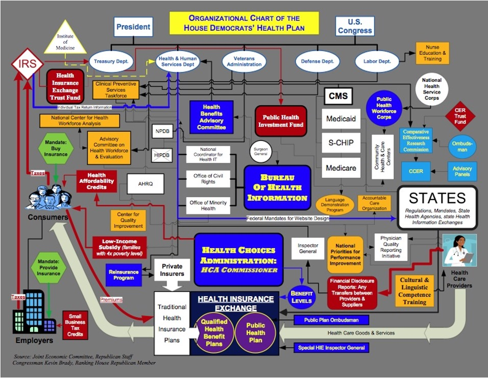
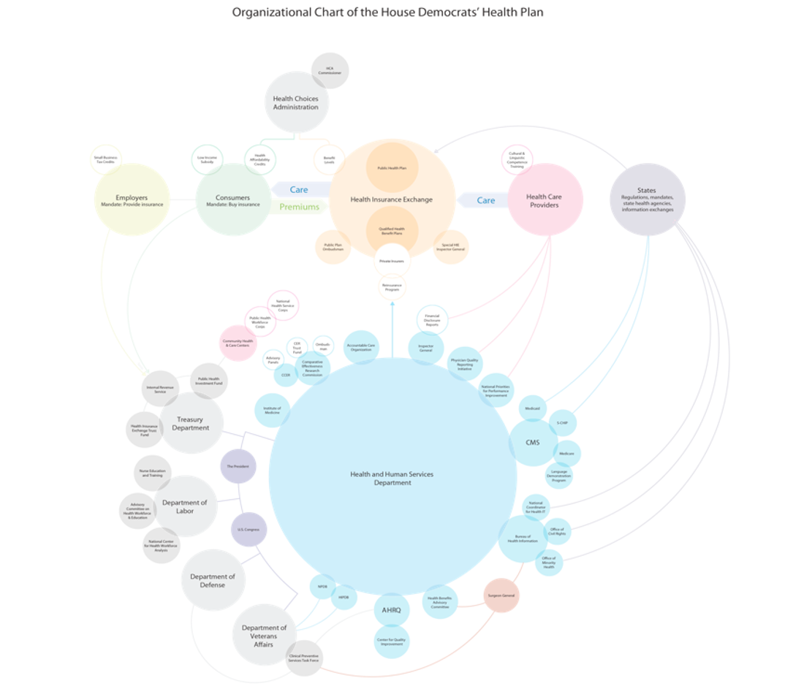
Left: Joint Economic Committee, Republican staff (Rep. Kevin Brady), 2009, as discussed on the Cato blog. Right: a redesign of the same chart, 2009.
How a Republican might see it
How a Democrat might see it
After: Bostock, Carter, Cox & Quealy, One Report, Diverging Perspectives, The New York Times, Oct 5, 2012. Data: US Bureau of Labor Statistics, via FRED
Values traced from the original charts. Sources: American Community Survey (ACS), U.S. Census Bureau; Zillow Home Value Index (ZHVI)
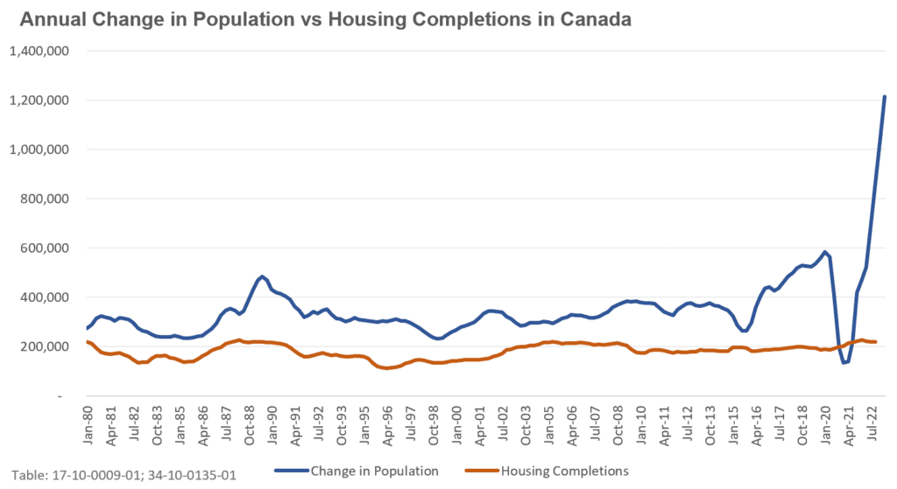
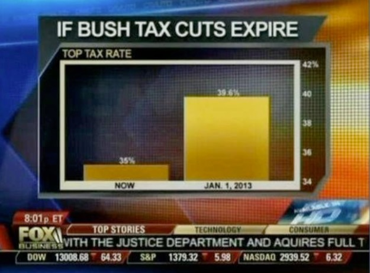
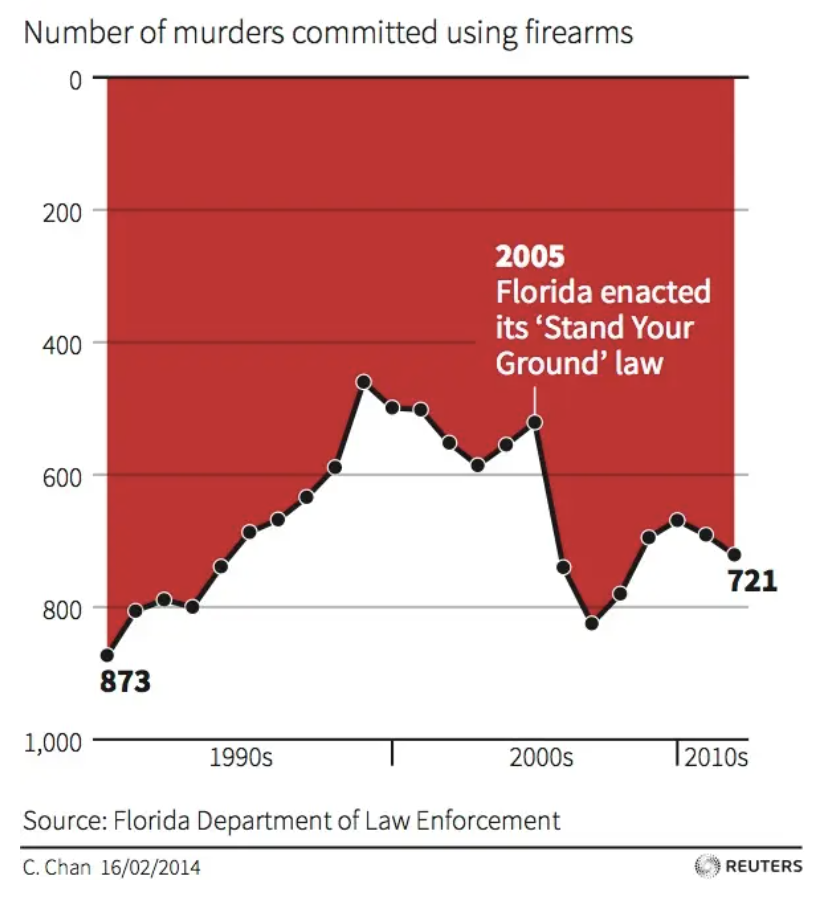
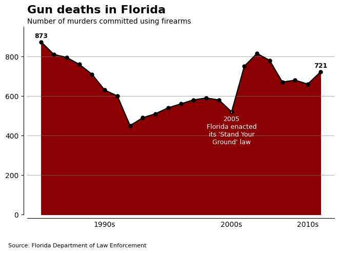
Left: Reuters (C. Chan, 2014). Data: Florida Department of Law Enforcement.
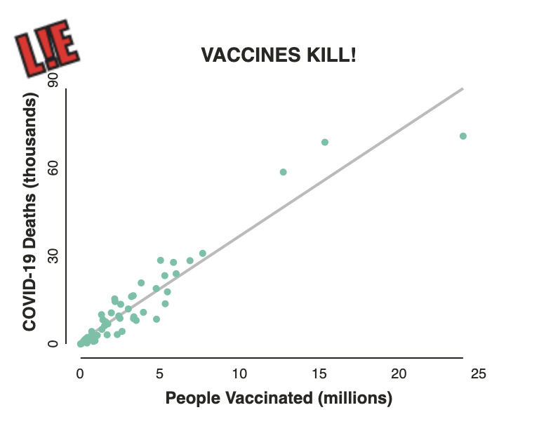
The count of just about anything correlates with the number of people in the region
How you choose your data is part of the storytelling
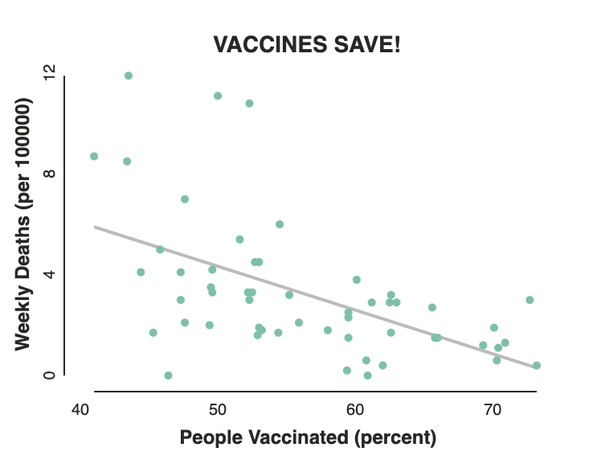
Hans Rosling’s 200 Countries, 200 Years, 4 Minutes. The Joy of Stats, BBC (2010).